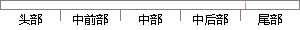

其他的功能在系统测试中就已经进行过测试，这里也不再重复测试。
片段位置图

相似结果|
1
原句片段：其他的功能在系统测试中就已经进行过测试，这里也不再重复测试。
相似片段 1：那么旧系统的原有功能跟特性就成为了最有效的测试...为了避免测试执行的冗余,可不再重复测试。而在验收...但是否有必要进行这种大量的重复性质的测试,不过也是...
相似片段 2：类型的需求(功能性需求、性能要求、其他需 求等);...质量,必须在 测试设计阶段就对系统进行严密的测试...重复测试就是一遍又一遍地执行某个操作或 功能,比如...
|
※ 片段修改建议 ※
近似词参考：- 功能：功效
- 系统：体系
- 已经：已
- 进行：举行
- 不再：再也不
- 重复：反复
系统自动生成语句：其他的功效在体系测试中就已举行过测试，这里也再也不反复测试。
注：本片段修改建议为系统自动生成，仅供参考。